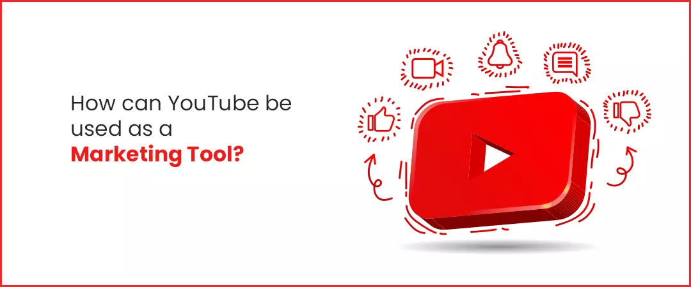
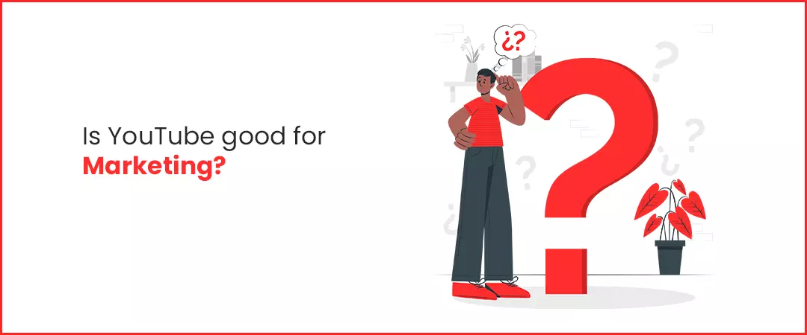
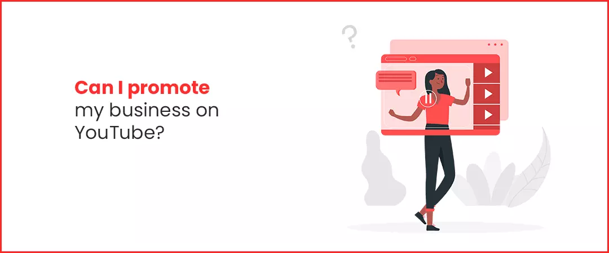
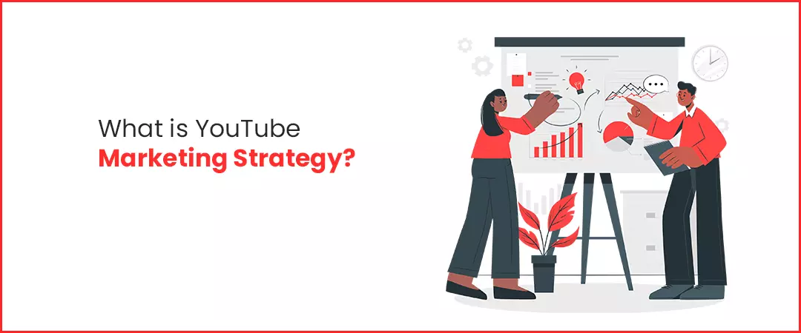
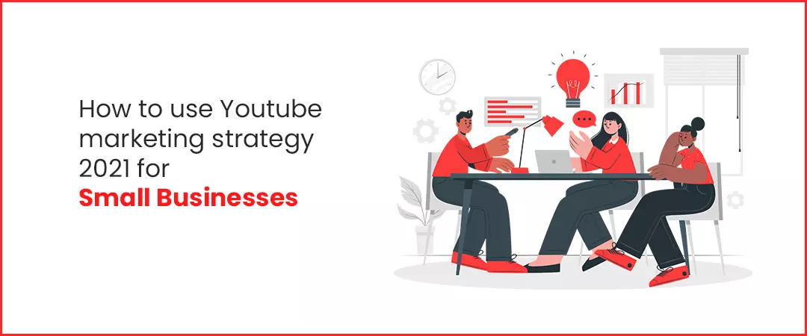
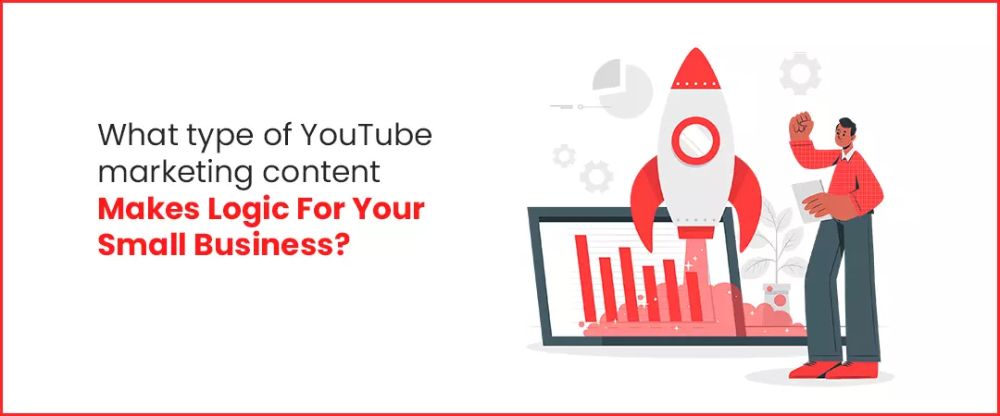
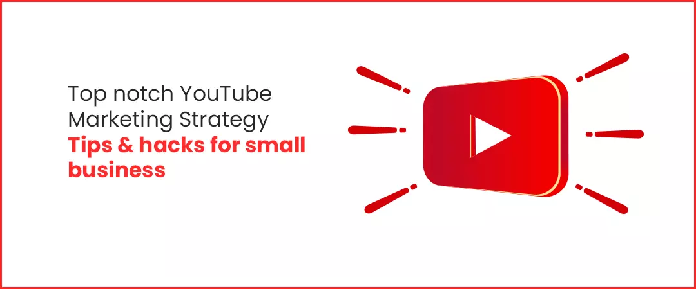

Small business entrepreneurs leverage YouTube as a strategic marketing tool as it helps them to increase their sales ROI, brand’s awareness, advocacy, creditability, leads, help them to promote their products/services, give them a huge audience (customer base), give opportunities to work with other Youtubers, brands, advertisers & influencers and eventually make them an authority in their industry.
How Tech Youtubers can make money in 2021
Contents
- 1. How can YouTube be used as a marketing tool?
- 2. Is YouTube good for marketing?
- 3. Can I promote my business on YouTube?
- 4. What is YouTube marketing strategy?
- 5. How to use Youtube marketing strategy 2021 for small businesses
- 6. What type of YouTube marketingcontent makes logic for your small business?
- 7. Top notch YouTube Marketing Strategy Tips& hacks for small business
How can YouTube be used as a marketing tool?

An incredibly competitive landscape, a search engine, a marketing video distributing, publicizing & hosting service, an advertising platform, a social network, and a community site,YouTube has become a goldmine of advertising marketing content.A well-executed Youtube marketing strategy for small businessescan accelerate outreachto potential customers, advertisers, influencers, brands to collaborate and improved online promotions. In fact, many brands buy real active Youtube subscribers to increase their brand’s creditability, awareness and reputation.
Is YouTube good for marketing?

Credibility comes from material evidences
YouTube has become an incredible digital marketing tool for any type of business. Its reach is vast and global, as evidenced by the key statistics:- Marketing is moving toward video over static contentand YouTube is a key host and a marketplace.
- 3 billion active users monthly (Statista, 2021)
- 500 hours of video are uploaded every minute.
- 5 billion videos are watched every day.
- 80 percent of people aged 18–49 watch YouTube
- In their 2020 report, Wyzowl found:
- 89% of video marketers say video gives them a good ROI.
- 83% of video marketers say video helps them with lead generation.
- 87% of video marketers say video has increased traffic to their website.
- 80% of video marketers say video has directly helped increase sales.
- 95% of video marketers plan to increase or maintain video spend in 2020.
- 85% of businesses use videoas a marketing tool.
- Social Media Examiner’s Social Media Marketing Industry Report shows that 57% of marketers used live videoin 2019!
- More than 55% of shoppers use online video while actually shopping in a store, says Google.
- According to Devumi marketing specialist, Chris Desadoy, “In 2016, YouTube and periscope will have exceptional value for marketers looking to grow their audience and grow pipeline of interested prospective customers. Getting views will become increasingly important, and having a multi-channel campaign will be critical for your business’s success.”
- According to Google, nearly 67% shoppers found inspiration to purchase after watching a YT video, and out of these, every 9 in 10 say they have discovered new products & services or brands through YouTube.
- The success results of video marketing are undeniable—according to Think with Google blog, 52% of marketing professionals worldwide list video as the type of content with the best ROI.
- Whether it’s a best seller or something new, video is a great way to showcase what a business can provide to a client or another business without needing a salesperson for each interaction,” says Thrive’s Media Specialist Corbin Hubbard.
- According to Google blog, adding a product video on your landing page can increase conversions by 80%, Hence, to become a noticeable entity on YT and gain potential customers to go viral as a more recognized brand, you need to access the benefits of YouTube marketingfor your small business.
Can I promote my business on YouTube?

- Undoubtedly yes! YouTube’s vast audience (over 3 billion users! (Statista)) and multimedia format makes it a highly effective way for small businesses to communicate the brand message to their audience.
- You must have heard an old sayingabout the sales game: "You're really just selling yourself." Consumers want to buy from people they know and trust. YouTube becomes an incomparable medium for you to present yourself and make your audience feel like they know you.Therefore, leveragethis platform as a way to connect personally with customers.
- Showcase how and why your products are easy to use, reliable, and of high quality, createdemonstrational videos, post videos of your products in use, which will show off your products' proficiencies and make your target customers think about how they might use the product to meet their needs.
- YT gives you aneccentric opportunity for small businesses to establish brand recognition and authority. Why? Because it is the second largest search engine in the world (Hootsuite)
- When customers in your target market are making search queries relevant to your small business, they want to see the product live in action, or read a review. Fill out their thirst with proper product videos and intersect their queries with killer keyword research (we will talk about them later in this blog)
- If you compare a traditional TV ad with a YouTube ad of the same product, you can see that the latter video sells the product more successfullyoverperson-to-personcommunication with the potential patron. YouTube ads reach out to 80 times more adults belonging to 18-36-year-olds, as per Ipsos/Google Advertising Attention Research. With 3 billion viewers (Statista), YT ads are big business to go for!
- You can leverageYT as a platform to prove your own expertise, as many beauty, travel & fashion vloggers do.
- Trust is the foundation when comes to customer acquisition. So, as a small business entrepreneur, you must entice your target customers with more than a sales pitch. Remember, if they don’t trust you, on no occasion they’ll buy from you. YT helps you in building trust and credibility with your target market. You must offer your target customers with reasons to consider your products and services.
Hence, YouTube for small businesses is a critical marketing tool which any establishment in any industry must leverage regardless of whatever product or service it is marketing. It helps promotes sales, revenue, awareness, credibility, reliability and leads of a brand.
Use best marketing strategies to provide company information, product information, industry information, how-to instructions, reviews, behind the scenes and humanize your company. It is a way to reach customers, so now we will tell you,how do you use YouTube for business.
What is YouTube marketing strategy?

A Youtube marketing strategy is a business's game proposal for reaching & driving prospective consumers and turning them into customers of their products or services via YouTube.It helps you to reach an enormous audience (potential customers) on YT in a way that is both cost-effective and measurable. YouTube marketing helps you to save money, make money and influence buyer’s decision.
It also helps you to promote your brand by running advertising campaigns and construe video analytics as progress trackers of the business promotion. It helps marketers to get their brands/organizations discovered/exposed to a large number of audiences
The ultimate goal of Youtube marketing strategy for small business is to achieve and communicate a sustainable competitive advantage over rival channels by considering the consumer behaviour, needs and wants.
Thus, it is a is a powerful advertising tool that can lead to broader awareness for your business and significantly, more customers, leads and sales.
How to use Youtube marketing strategy 2021 for small businesses

1. Identify your target audience/market
Identify consumer’s needs, problems, goals etc. Make videos relevant to your audience so, that they gain views, watch time and subscribers for you. Head to com/analytics. You will be directed to an analytics dashboard that represents an overview of how your videos have been performing during the past 28 days. The overview report shows performance metrics, engagement metrics, demographics, traffic sources, and popular content. Leverage these material statistics to make YouTube marketing strategy according to consumer behaviour. Brands such as IKEA and Nike make incredible advertisement parodies that engage their target demographic and turn them into customers
2. Position your small business superior to competitors via cleverbranding through Brand Account
A. Create a Brand Account :
A Brand Account lets small businesses to achieve another level editing tools authorizations and create a more professional online presence.
- You must own a Google account, that has been created ‘to manage my business’.
- Then, open YT and sign in with this Google account and click on ‘My Channel’ in the account module.
- To create a brand account, click on the option of ‘Use a business or other name’
- In next dialogue box, enter ‘Brand Account Name’ and click ‘Create’ button to create your brand account.
- After creating your brand account, be sure to add
-
Channel icon :
Upload an 800 x 800 px square or round image, it can be a company logo or, if you are a public figure, a professional headshot -
Channel banner :
Just like Facebook, channel art is a header or banner to add your business' logo and slogan. You can add a relevant profile photo/channel symbol.Banner dimensions are recommended under 2560 x 1440 px -
Channel description :
Not more than 800 words -
Make a thrilling channel trailer :
(30-60 seconds)- Just like a movie trailer, represent the best footage of your product/services. You can make a short video that acquaints the target market with what they'll discover on your channel. When you add this trailer, it will show up for your landing page when watchers visit, assisting with pulling them in and familiarising them with your brand. -
About section :
Do include all your contact details and physical store address in about section.
3. Create unique and trending videos
Videos that are funny, quirky, moves around latest trends and technology or different from other brands creates a lot of curiosity amongst audience. So, become successful with innovative ideas.
4. Maintain Consistency
Many channels which blossomed as viral overnight, lost their implication due to inconsistency. Consistency in producing marketing videos helps to use YouTube for small businesses in order to grow it. When making YouTube marketing strategyfor small business, consider how often you can convincingly commit to uploading new content and make sure you can stick to it.
Ponder when you release your videos. According to Oberlo, most viewers watch videos in the evenings and on weekends. The best time to post your content is early afternoons during the week or early Saturday and Sunday mornings so that your videos will be indexed by the time your potential viewers are searching.
5. Identify competitoin
Begin withrecognizing three to five competitors. You can try Google Ads’ free Keyword Planner to see which companies rank for keywords related with your small business. Or check out what channels appear in searches on YT for the same keywords.
- Study key metrics like subscriber counts and viewership stats so you can use them as targets for your channel.
- Check out titles and descriptions to steal keywords they use.
- Explore the comments on their videos to see what people want and like.
- Drive their target audience to your channel by providing them your answers to their queries in competitor’s comment section.
- Learn from your favourite channels and look what content they producing to understand their strategyand use it to grow your channel.
- If you sell products, it’s aninordinatetechnique to showcase and promote them and all of their usages
What type of YouTube marketingcontent makes logic for your small business?

-
Listicles:
You can create listicles that highlight your products or services. Videos that show the list in a slideshow-sequel format, typically with music playing in the background are called listicles. Video listicles can breathe new life into YouTube marketing strategy as true marketing tactic. Ponder using video listicles to showcase variety by providing your target audience with the systematized content they wish. These mechanisms of production are a traditional content format. You can create listicles that high spot your products in an educational, informational, or entertaining manner. Make them relevant to your audiences’ interests and your business niche.
-
How-to videos:
You can leverage the benefits of YouTube marketing by producing “How-to” videos. They provide a lot of information to the buyer. You can give your viewers an easy to-use guide through these videos and increase your sales. Spy on your competitors for more information on these how-to tutorials. How-to videos incline to perform very well. Explore the easiest way to use your products.
-
Behind-the-scenes videos :
Humanize your brand and share behind-the-scenes videos to attach your audience emotionally with your brand. For example, Sprout Social has a completeassortment of videos with members of their team!
-
Product videos:
Showcase yourproducts or services. Tell about new features, highlighting latest product updates, or announce new products, discounts, & offers from your business.
-
On-demand product demonstration videos :
Demonstration videos are short videos representing the advantages to use a product efficiently. These product videos represent how to use certain features of a specific product. You can tell your audience about your new product, or proclaim innovative contributions for your business. According to Google, 74% of users who watched an explainer-video about a product subsequently bought it.
-
Product reviews :
A product review is the most accommodating types of video, particularly for customers who are in the consideration phase of the shopping expedition. Brands can upload reviewing videos of its products, to react to enquiries, qualms and represent the exclusive features that your product/brands offer. This mechanism influences and inspires customers when they make purchasing decisions.
-
Happy Customer testimonials :
Happy Customer testimonials promote a brand’s reliability. They are short-form discussions with gratified customers. Customer testimonials can help increase sales and product credibility.
-
Thought leader interviews :
You can broadcast thought leader’s/famous personalities or expert’s interviews to increase your company’s credibility among target audience. Telecasting interviews of influencers within your industry help drive their followers to your channel
-
YouTube Live :
It enables brands to show live videos to viewers like a product unboxing video.
-
Event videos :
Event videos feature experiences at a conference or exhibition and can be a prodigious way to represent the enthusiasm of a crowd
-
Case studies :
Case studies go yonder testimonials, as an alternative serving to long-form content, each one discovering a result in its entirety. A case study often converses a challenge or debate, how it was loomed and committed, and the positive outcome that was achieved as a result. Another way you can promote your business is to create video case studies of your customers. According to Dimensional Research, 90 percent of buyers who read positive customer success content claimed it influenced their buying decision. These case studies don’t need to contract completely with your brand, they can rely on client origin stories, achievements, or other successful personalities in your industry. Showcase case studies on your homepage andcustomer stories across your social media channels.Promote your small business, your products or services byproducing case studies of your clients as a Youtube marketing video.
Top notch YouTube Marketing Strategy Tips & hacks for small business

- Upload content consistently to make your customers coming back for more.
- Use YT shorts, which are collection of short videos that can remain visible for a day or until they're deleted.
- Strategize your YouTube marketing videos ahead of time and plan your videos in advance to make sure you upload new content regularly
- Go live while showcasing your products and increase your videos watch time!
- Create different types of marketing videos to influence a wider audience
- Collaborate with a competitor or influencer in your niche to drive more target potential customers.
- Interact with your subscribers and audience, as well as try to increase engagement with every video. Reply to each and every comment.
- Host contest, polls and giveaways to promote audience retention
- Ask questions of your viewers in your videos, to encourage them to leave a comment
- Leverage the “Community” tab (located in your channel’s main page) to post images, GIFs, and video previews, as well as to poll your subscribers. For instance, Evan Carmichael frequently uploads polls questioning his subscribers what they want to see in his upcoming videos.
- Include calls-to-action (Like, comment, share and subscribe) in every
- Create playlists that feature your range of products.
- Humanize your brand by representing real employees, customers, and partners. It also consents you to build trustworthiness by publishing informational content that helps your target buyer.
This Luxurious guide will definitely help all types of small businesses to grow using Youtube marketing. Feel awesome and free to share!